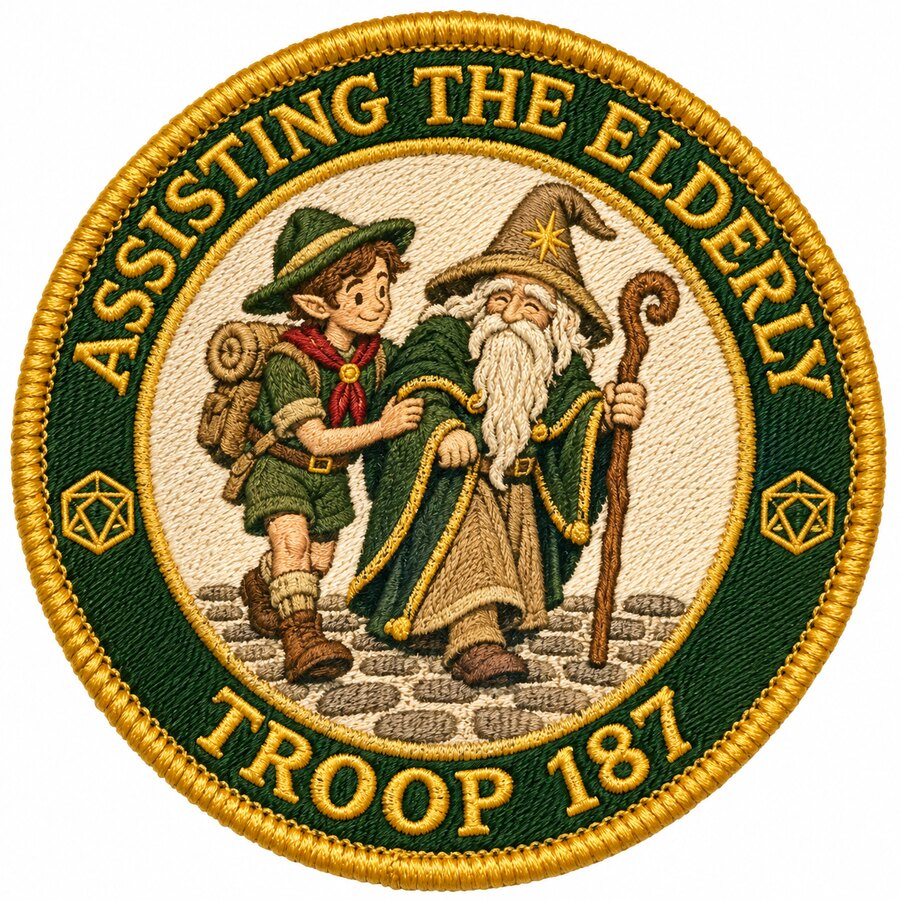
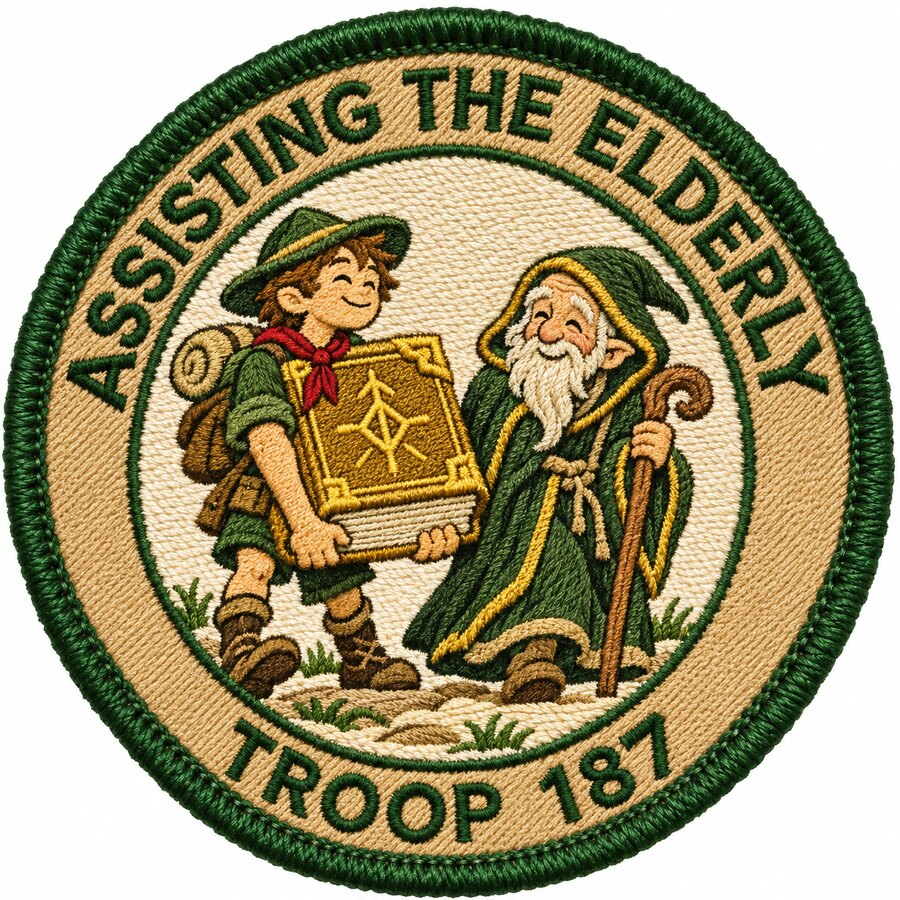
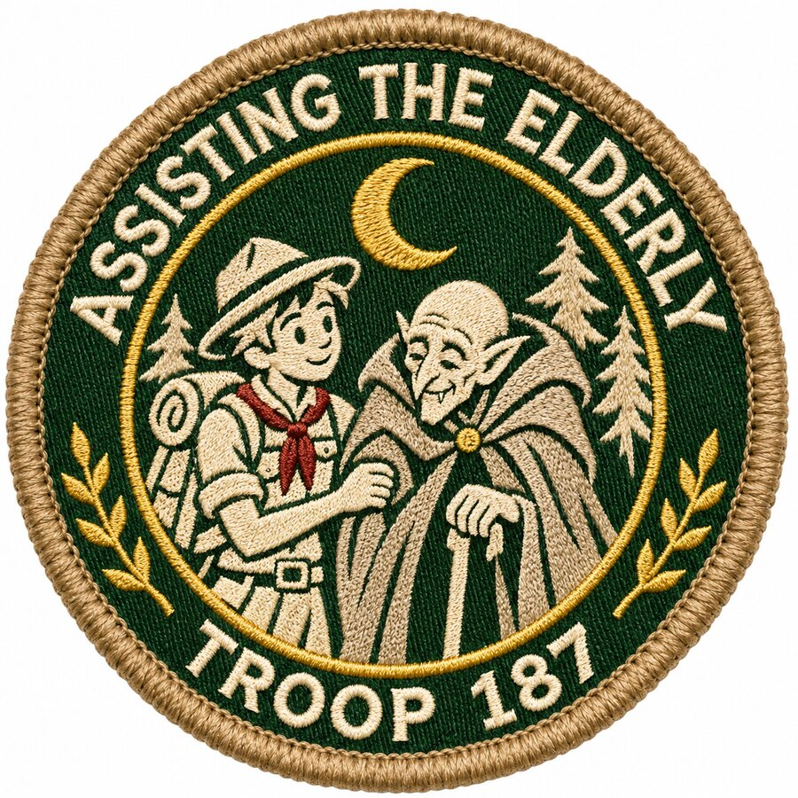
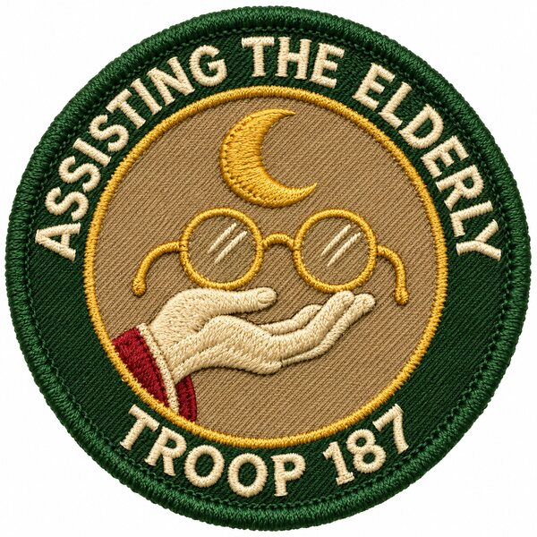
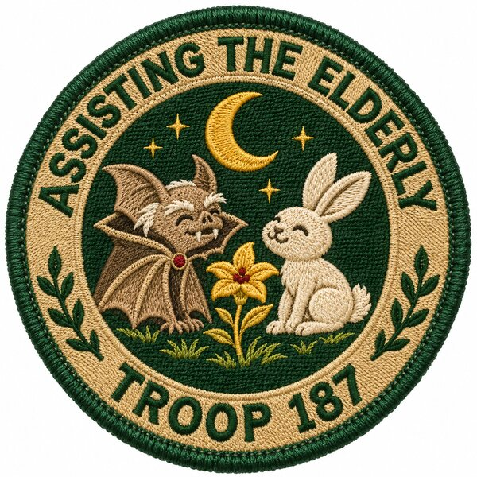
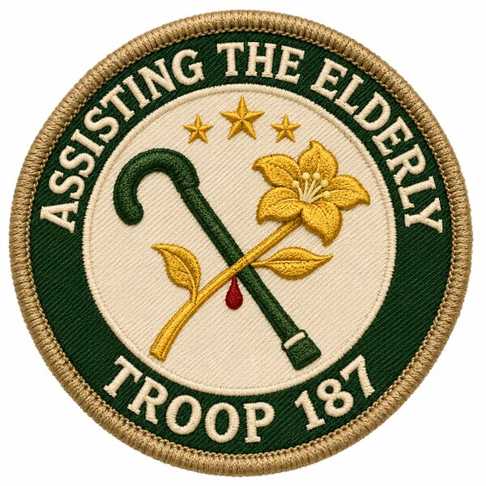

Russ's badge — option B
A D&D take on a normal “Assisting the Elderly” merit badge: a scout helping an elder, in embroidered-patch style. Scott picked B; it prints at 3″ (plus a 2.25″ spare) on the badge page.

A
The scout walks an old bearded wizard with a staff across a cobbled road. A d20 sits on each side of the ring.

B
The scout carries a huge rune-stamped spellbook for a stooped, hooded old mage.
ChosenPrint PNG


C
The scout offers an arm to a bald, pointy-eared elder in a cloak under a crescent moon. A kindly Orlok in everything but name.
First batch (emblem-only, set aside)

1A
A hand holding up old spectacles under a moon

1B
A caped bat and a rabbit, with a gold flower

1C
A cane crossed with a gold flower and a red drop